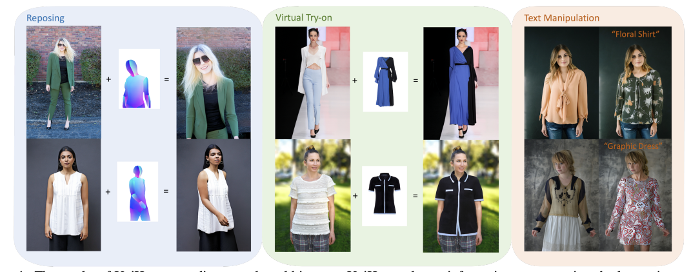
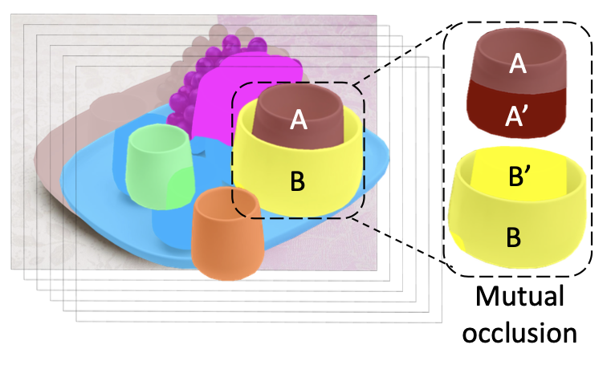
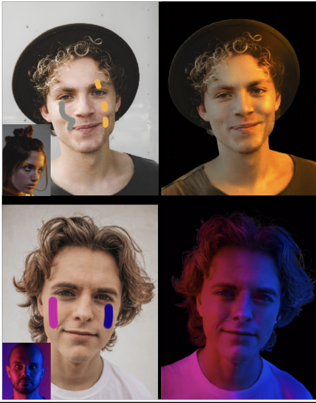
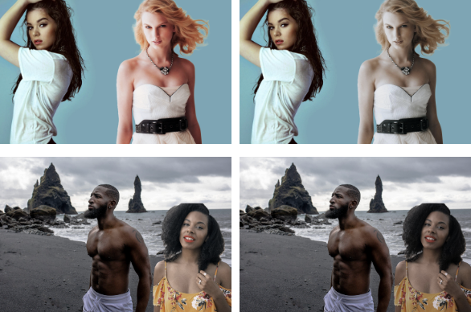
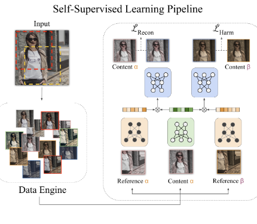
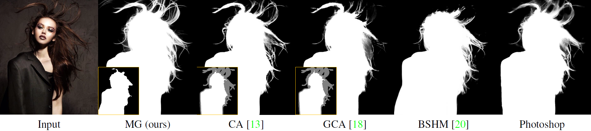
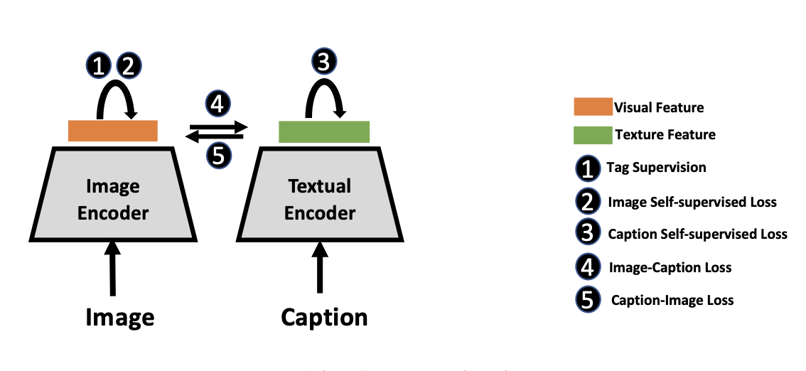
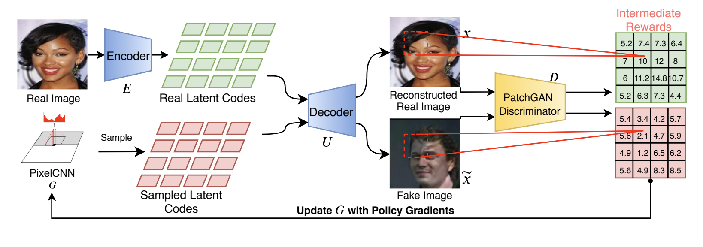
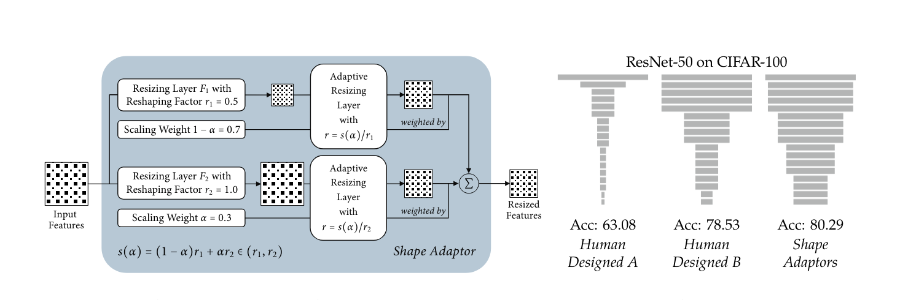

Highlighted Research
I'm interested in computer vision, machine learning, computer vision, and image processing. Most of my research is about images understanding and editing. Representative papers are highlighted. See the full list
|
|
|
SwapAnything: Enabling Arbitrary Object Swapping in Personalized Visual Editing
Jing Gu,
Yilin Wang
Nanxuan Zhao,
Tsu-Jui Fu,
Wei Xiong,
Qing Liu,
Zhifei Zhang,
He Zhang,
Jianming Zhang,
HyunJoon Jung,
Xin Eric Wang
project page /
paper /
ECCV, 2024
A method for personalized subject driven image editing.
|
|

|
UniHuman: A Unified Model for Editing Human Images in the Wild.
Nannan Li,
Qing Liu,
Krishna Kumar Singh,
Yilin Wang
Jianming Zhang,
Bryan A. Plummer,
Zhe Lin,
CVPR, 2024
Human editing via diffusion.
|
|

|
Amodal Scene Analysis via Holistic Occlusion Relation Inference and Generative Mask Completion
Bowen Zhang,
Qing Liu,
Jianming Zhang,
Yilin Wang
Akide Liu,
Zhe Lin,
Yifan Liu,
AAAI (oral), 2024
project page /
paper
Amodal Segmentation considers mutual occulusion.
|
|
|
PHOTOSWAP: Personalized Subject Swapping in Images
Jing Gu,
Yilin Wang
Nanxuan Zhao,
Tsu-Jui Fu,
Wei Xiong,
Qing Liu,
Zhifei Zhang,
He Zhang,
Jianming Zhang,
HyunJoon Jung,
Xin Eric Wang
project page /
paper /
NeurIPS, 2023
A method for personalized subject driven image editing.
|
|

|
LightPainter: Interactive Portrait Relighting with Freehand Scribble
Yiqun Mei,
He Zhang,
Xuaner Zhang,
Jianming Zhang,
Zhixin Shu,
Yilin Wang
Zijun Wei,
Yan Shi,
HyunJoon Jung,
Vishal M. Patel,
CVPR, 2023
project page /
paper
A scribble-based relighting system that allows users to interactively manipulate portrait lighting effect with ease.
|
|

|
Interactive Portrait Harmonization
Jeya Maria Jose Valanarasu,
He Zhang,
Jianming Zhang,
Yilin Wang,
Zhe Lin,
Yinglan Ma,
Zijun Wei,
Kalyan Sunkavalli
Vishal M. Patel
ICLR, 2023
project page /
paper
Interactive Harmonization for portrait photo.
|
|
|
Lite Vision Transformer with Enhanced Self-Attention
Chenglin Yang,
Yilin Wang,
Jianming Zhang,
He Zhang,
Jianming Zhang,
Zijun Wei,
Zhe Lin,
Alan Yuille
CVPR, 2022
project page /
paper
light-weight vision transformer models for vision tasks.
|
|

|
SSH: A Self-Supervised Framework for Image Harmonization
Yifan Jiang,
He Zhang,
Jianming Zhang,
Yilin Wang,
Zhe Lin,
Kalyan Sunkavalli,
Simon Chen,
Sohrab Amirghodsi,
Sarah Kong,
Zhangyang Wang,
ICCV, 2021
paper
Image Harmonization based on self-supervised learning
|
|

|
Mask Guided Matting via Progressive Refinement Network
Qihang Yu,
Jianming Zhang,
He Zhang,
Yilin Wang,
Zhe Lin,
Ning Xu,
Yutong Bai,
Alan Yuille
CVPR, 2021
project page /
paper
Mask Guided Image Matting
|
|

|
Multimodal Contrastive Training for Visual Representation Learning
Xin Yuan,
Zhe Lin,
Jason Kuen,
Jianming Zhang,
Yilin Wang
Michael Maire,
Ajinkya Kale,
Baldo Faieta,
CVPR, 2021
project page /
paper
Intra- and inter-modal similarity preservation for multimodal representation learning.
|
|

|
Incorporating Reinforced Adversarial Learning in Autoregressive Image Generation
Kenan E. Ak,
Ning Xu,
Zhe Lin,
Yilin Wang
ECCV, 2020
paper
|
|

|
Shape Adaptor: A Learnable Resizing Module
Shikun Liu,
Zhe Lin,
Yilin Wang
Jianming Zhang,
Federico Perazzi,
Edward Johns,
ECCV, 2020
paper
|
|
|
Multimodal Style Transfer via Graph Cuts
Yulun Zhang,
Chen Fang,
Yilin Wang
Zhaowen Wang,
Zhe Lin,
Yun Fu,
Jimei Yang,
ICCV, 2019
paper
|
 |
2018
- Generalizing Graph Matching beyond Quadratic Assignment Model
Tianshu Yu, Junchi Yan,Yilin Wang, Wei Liu, Baoxin Li
International Conference on Neural Information Processing Systems(NIPS 2018)
- Weakly Supervised Facial Attribute Manipulation via Deep Adversarial Network
Yilin Wang, Suhang Wang, Guojun Qi, Jiliang Tang, Baoxin Li
IEEE Winter Conf. on Applications of Computer Vision (WACV 2018)[paper]
- CrossFire: Cross Media Joint Friend and Item Recommendations
Kai Shu, Suhang Wang, Jiliang Tang, Yilin Wang, Huan Liu
ACM International Conference on Web Search and Data Mining (WSDM 2018)(spotlight)[paper]
- Understanding and Predicting Delay in Reciprocal Relations
Jundong Li, Jiliang Tang, Yilin Wang, Yali Wan, Yi Chang, Huan Liu.
In Proceedings of the 27th International Conference on World Wide Web (WWW 2018)(Research Track)
[arXiv]
- Exploring Hierarchical Structures for Recommender Systems
Suhang Wang, Jiliang Tang, Yilin Wang and Huan Liu
IEEE Transactions on Knowledge and Data Engineering
2017
- CLARE:A Joint Approach to Label Classification and Tag Recommendation
Yilin Wang, Suhang Wang, Jiliang Tang, Guojun Qi, Huan Liu, Baoxin Li
AAAI Conference on Artificial Intelligence (AAAI 2017) (oral)[paper][code]
- Understanding and Discovering Deliberate Self-harm Content in Social Media
Yilin Wang, Jiliang Tang, Jundong Li, Baoxin Li, Yali Wan, Clayton Mellina, Neil O'Hare and Yi Chang
International Conference on World Wide Web (WWW 2017)(Research Track)[paper] [slides]
- Exploiting Hierarchical Structures for Unsupervised Feature Selection
Suhang Wang, Yilin Wang, Jiliang Tang, Charu Aggarwal, Suhas Ranganath, Huan Liu
SIAM International Conference on Data Mining (SDM2017) [paper]
- What Your Images Reveal: Exploiting Visual Contents for Point-of-Interest Recommendation
Suhang Wang, Yilin Wang, Jiliang Tang, Kai Shu, Suhas Ranganath and Huan Liu
International Conference on World Wide Web (WWW 2017)(Research Track)[paper]
2016
- PPP:Joint Pointwise and Pairwise Image Label Prediction
Yilin Wang, Suhang Wang, Jiliang Tang, Huan Liu, Baoxin Li
IEEE International Conference on Computer Vision and Pattern Recognition (CVPR 2016) [Paper]
- Efficient Unsupervised Abnormal Crowd Activity Detection Based on a Spatiotemporal Saliency Detector
Yilin Wang, Qiang Zhang,Baoxin Li
IEEE Winter Conference on Applications of Computer Vision (WACV 2016) [Paper][code]
- Scale Adaptive Eigen Eye for Fast Eye Detection in Wild Web Images
Xu Zhou, Yilin Wang, Peng Zhang, Baoxin Li
IEEE International Conference on Image Proccessing (ICIP 2016)
2015
- Sentiment Analysis for Social Meida Images
Yilin Wang, Baoxin Li
IEEE International Conference on Data Mining
ICDM(PhD forum) 2015
- Real Time Vehicle Back up Warning System with Single Camera
Yilin Wang, Jun Cao, Baoxin Li
IEEE International Conference on Image Proccessing (ICIP 2015) [Paper]
- Unsupervised Sentiment Analysis for Social Media Images
Yilin Wang, Suhang Wang, Jiliang Tang, Huan Liu, Baoxin Li
International Joint Conference on Artificial Intelligence (IJCAI 2015) [Paper] [Project]
- Inferring Sentiment from Web Images with Joint Inference on Visual and Social Cues: A Regulated Matrix Factorization Approach
Yilin Wang, Yuheng Hu, Subbarao Kambhampati, Baoxin Li.
International AAAI conference on Web and Social Media (ICWSM 2015)(oral) [Paper]
- Structure Preserving Image Quality Assessment
Yilin Wang, Qiang Zhang, Baoxin Li.
IEEE International Conference on Multimedia and Expo
ICME(oral) 2015 [Paper]
- Exploring Implicit Hierarchical Structure for Recommender Systems
Suhang Wang, Jiliang Tang, Yilin Wang, Huan Liu
International Joint Conference on Artificial Intelligence (IJCAI 2015) [Paper]
- Improving Vision-based Self-positioning in Intelligent Transportation Systems via Integrated Lane and Vehicle Detection
Parag S. Chandakkar, Yilin Wang, Baoxin Li.
IEEE Winter Conference on Applications of Computer Vision (WACV 2015) [Paper]
2014
- Image Co-segmentation via Multi-task Learning
Qiang Zhang, Jiayu Zhou,Yilin Wang, Jieping Ye,Baoxin Li.
British Machine Vision Conference (BMVC 2014) [Paper]
|
 |
Area Chair, ACM MM 2020
Area Chair, ACM MM 2021
Committee, Adobe Fellowship
Reviewer of CVPR, ICCV, ECCV, ICML, NuriPS since 2017
Arizona State Graduate Student Fellowship 2017
|
Past
Research Interns
|
Zhanghan Ke,
Nannan Li,
Yiqun Mei ,
Yulun Zhang,
Shikun Liu,
Chenglin Yang,
Jeya Maria Jose Valanarasu,
Kenan E Ak,
Qihang Yu,
Xin Yuan ,
Yifan Jiang,
Jing Gu,
Zhibo Yang
|
|